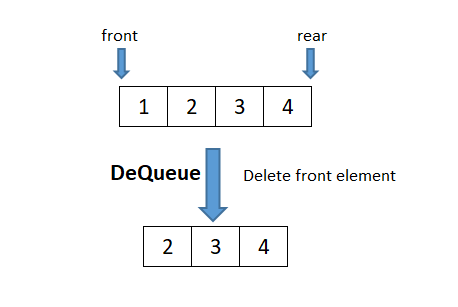

A queue is a linear data structure that stores the elements sequentially. It uses the FIFO (First In First Out) approach for accessing elements. It operates like a line where elements are added at one end (rear) and removed from the other end (front).

Key Operations in a Queue:
1. Enqueue Operation
The enqueue operation adds an element to the rear (end) of the queue.

Algorithm for Enqueue Operation:
Step 1: Check if the queue is full (overflow condition).
Step 2: If the queue is not full, increment the rear pointer to point to the next empty space.
Step 3: Add the new element at the position pointed to by the rear pointer.
Step 4: If this is the first element, set the front pointer to the rear.
Step 5: End.
2. Dequeue Operation
The dequeue operation removes an element from the front of the queue.
Algorithm for Dequeue Operation:
Step 1: Check if the queue is empty (underflow condition).
Step 2: If the queue is not empty, access the element pointed to by the front pointer.
Step 3: Increment the front pointer to remove the front element.
Step 4: If the front pointer exceeds the rear pointer, reset both pointers (queue is empty).
Step 5: Return the removed element.
Step 6: End.
size=10
queue=[None]*size
front=-1
rear=-1
def enqueue():
global front,rear
if rear==size-1:
print("\nOverflow")
else:
val=int(input("\nEnter value to be inserted: "))
if front==-1:
front=0
rear+=1
queue[rear]=val
def dequeue():
global front,rear
if front==-1:
print("\nUnderflow")
else:
front+=1
if front>rear:
front=rear=-1
def display():
if front==-1:
print("\nQueue is empty")
else:
print("\nQueue is: ",end="")
for i in range(front,rear + 1):
print(queue[i],end=" ")
print()
c=0
while (c!=4):
print("\nMenu driven:\n1. Enqueue\n2. Dequeue\n3. Display\n4. Exit")
c=int(input("\nEnter your choice (1-4): "))
if c==1:
enqueue()
elif c==2:
dequeue()
elif c==3:
display()
elif c==4:
print("\nExit")
else:
print("\nInvalid choice")